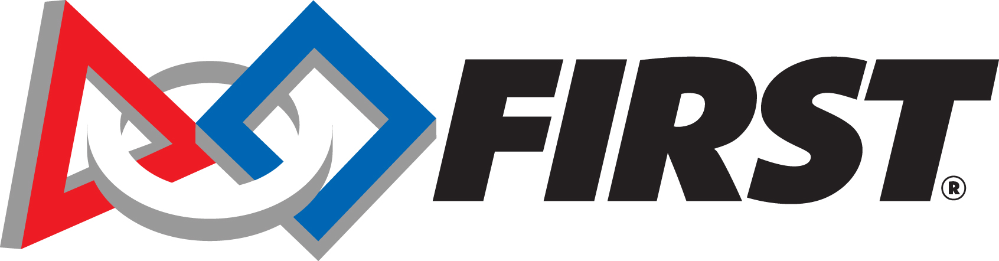

FIRST® is the world’s leading youth robotics community, delivering hands-on STEM learning that inspires innovation, builds confidence, and prepares kids for life. Across the globe, students thrive in our programs — powered by mentorship, teamwork, creativity, and engineering challenges.
Within the FIRST framework, there are three different programs: FIRST® LEGO® League, FIRST® Tech Challenge, and FIRST® Robotics Competition. Our team participates in FIRST® Tech Challenge.
FIRST® Tech Challenge participants design and build a classroom-scale robot and compete in a yearly challenge. Along the way, they gain technical skills and work collaboratively to solve problems. Teams are organized into Leagues and compete with other teams in the same league, culminating each year in the League Championship. Teams that to well in their league championship advance to post-season play.
League membership changes on occasion as team participation varies. For the last several seasons, we have been a part of the Kansas City East League.
In the 2026-27 Game Manual, First Tech Challenge has clarified the role of mentors:
The FIRST mission is to create programs that give young people skills, confidence, and resilience to build a better world, and mentors are a key component to that in FIRST Tech Challenge. Adult mentorship is a proven part of what makes FIRST so effective: Working with a mentor or coach is a critical part of the learning process. FIRST programs provide mentoring of students which may lead to a better understanding of STEM careers as well as increased confidence, self-esteem and satisfaction of the student. This naturally leads to the question: “How much involvement in building the robot should the mentors have?” The answer continues to be: “However much is needed to inspire the youth on the team.”
Each team’s robot should be representative of their journey and experience, and every team’s journey is unique. The level of involvement of mentors on a team will vary team-by-team and often season-by-season. For example, a team may have a student or group of students with enough CAD skills to largely create the CAD model of their robot with limited mentor guidance and oversight. The same mentor may need to take a more hands-on approach the next season if those students graduate, and no other students have those skills yet. FIRST does not provide a prescriptive process for running a team; each team should be structured to meet students where they’re at. Success should always be based on individual student outcomes.